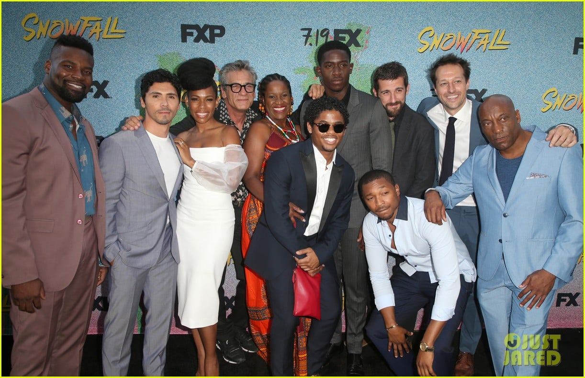

Characters
Meet the key players in Snowfall:
- Franklin Saint: A young street entrepreneur.
- Gustavo "El Oso" Zapata: A Mexican wrestler.
- Teddy McDonald: A CIA operative.
- Lucia Villanueva: The daughter of a Mexican crime lord.
- Jerome Xavier Saint: The uncle of Franklin Saint.
- Leon “Lee” Simmons: Franklin Saint's best friend and right-hand man.
- Einstein: The brainiac and mathematician of Deon's Crip set.
- Andre Wright: A detective in the LAPD who becomes involved with Franklin's empire.
- Melody Wright: Andre Wright's daughter, who forms a relationship with Franklin Saint.
- Manboy: A charismatic gang leader and rival to Franklin Saint.
- Khadijah: Manboy's fiery and independent sister involved in the drug trade.
- Irene Abe: A reporter investigating the impact of crack cocaine on the community.
- Alton Saint: Franklin Saint's estranged father with a complex past.
- Cissy Saint: Franklin Saint's mother navigating her son's involvement in drugs.
- Teddy's Family: Including his wife and children, unaware of his CIA activities.
- Avi Drexler: A powerful Israeli mobster who allies with Franklin Saint.
- Tony Marino: A mafia boss with drug trade connections.
